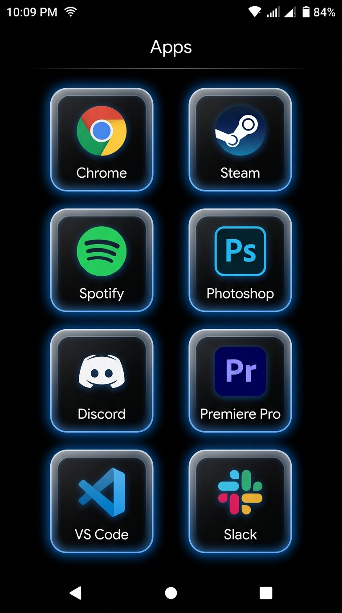
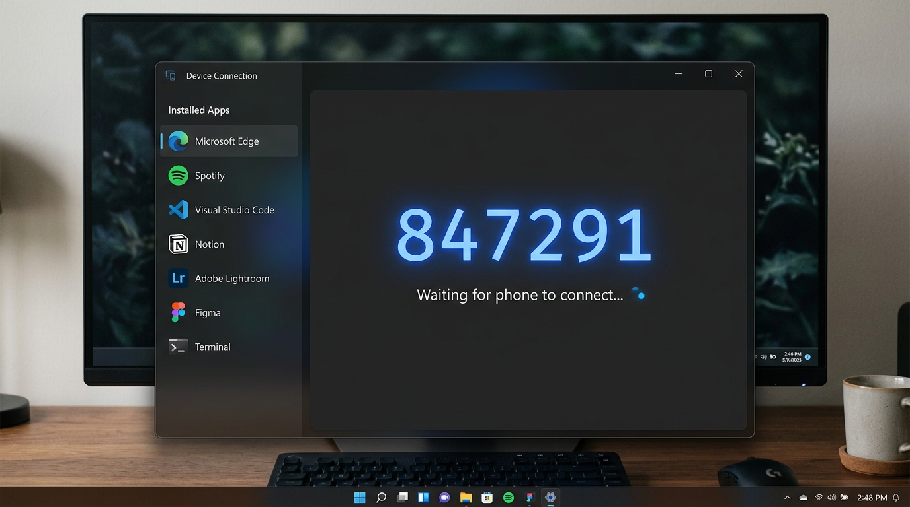

The controller
you already own.
Your phone is already a controller. WinDeck just turns it on. One tap. Free, forever.
Get WinDeck.
Two apps. One seamless experience. Free, forever.
Both apps must be on the same version to connect.
Download both the Windows app and the Android app to get started.

Android
Your controller
Swipe between pages. Tap any tile to launch an app on your PC instantly. 2 columns, 4 rows — 8 apps per page.

Windows
Your command center
Runs in the background, discovers your apps, generates a 6-digit pairing code. Enter it on your phone and you're connected.
WinDeck in action
Your PC. Your Phone.
One workflow.
The Windows app organises your apps. Your phone shows the tiles. Tap one — the app opens instantly on your PC.

Real setup · No staging · 100% wireless
The StreamDeck
you already own.
The hardware is already in your pocket. Or charging on your desk. You paid for it years ago.
Windows
Most controllers give you 8 buttons.
WinDeck gives you unlimited pages.
Pages, drag & drop, a full app library, live preview. Everything your workflow needs, running silently on your PC.
Controls
Every key.
On your phone.
Volume, media playback, lock screen, mute, shutdown — every system control at your fingertips.
Your PC's entire function row, in your hand.
Android
Pick up.
Tap.
Done.
Open WinDeck on your phone, enter the 6-digit code from your PC, and you're instantly connected. No IP addresses, no manual setup.
Swipe between pages — Work, Gaming, Music. Tap any tile to instantly launch that app on your PC. 8 tiles per page, perfectly organized.
Add a home screen widget to launch your most-used PC apps without even opening the app.
Requires Android 8+. Works on any phone.
Download APKWhy it matters
Built for people
who actually focus.
For the hustler
Boss walks by.
You're already on it.
One tap and you're on Teams. No one knows. WinDeck sits beside your PC, invisible to everyone else.
For the builder
Never break
your flow state.
Reaching for the mouse kills the moment. Tap to switch. Keep your hands on the keyboard. Keep going.
For the minimalist
A clean desk.
Zero extra hardware.
No USB dongle. No $250 StreamDeck. Just the phone already charging on your desk.
For the creator
Go live.
Stay in control.
Switch between OBS, your browser, and your chat in one tap. No mouse. No interruptions. Just you and your audience.
How it works
Set up in under a minute.
Get WinDeck
Download the Windows app and the Android APK from this page. Takes 30 seconds.
Enter the 6-digit code
Same Wi-Fi network. Open both apps. Enter the code shown on your PC into your phone. Done.
Control your PC
Launch apps, switch pages, trigger shortcuts. All from the phone already sitting on your desk.
Privacy
Nothing
leaves your home.
No servers. No accounts. No telemetry. WinDeck runs entirely on your local Wi-Fi — the same tech your devices already use.
Your app list, your shortcuts, your usage patterns — none of it ever leaves your network.
Packets never reach the internet. Ever.
Small print. No surprises.
Built with attention,
not investors.
Built solo. Open source spirit.
Pro features coming later — core stays free.